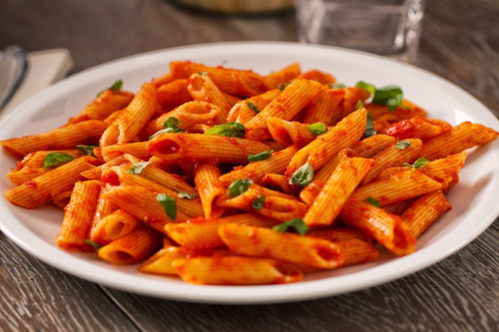

Penne al Pomodoro
Ingredienti
Di seguito riportiamo gli ingredienti per preparare il nostro piatto
- 400g di penne rigate
- 350 passata di pomodoro
- 1 spicchio di aglio
- Olio e sale q.b.
- Basilico e Parmigiano q.b.
Preparazione
- Cominciare mettendo sul fuoco un apentola di acqua salata per far cuocere la pasta
- far soffriggere uno spicchio d'agio in una padella con un filo d'olio, aggiungere la passata di pomodoro, un filo di sale e cuocere per 20 minuti o fino a quando il sugo non si sarà ristretto
- Versare la pasta nell'acqua bollente e cuocerli per il tempo indicato sulla confezione, scolare e mantecare insieme al sugo e qualche foglia di basilico.
- Servire con una spolverata di parmigiano grattuggiato
Visitate la pagina termini e condizioni